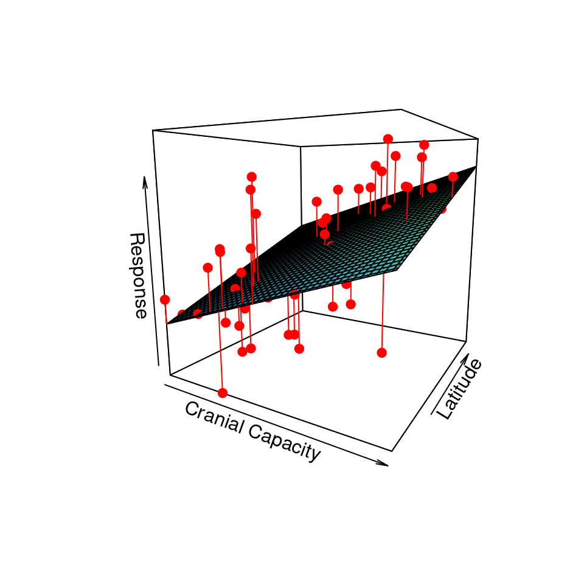
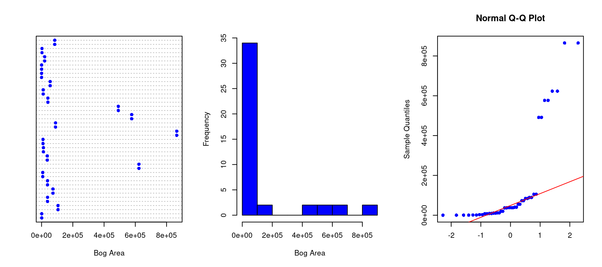
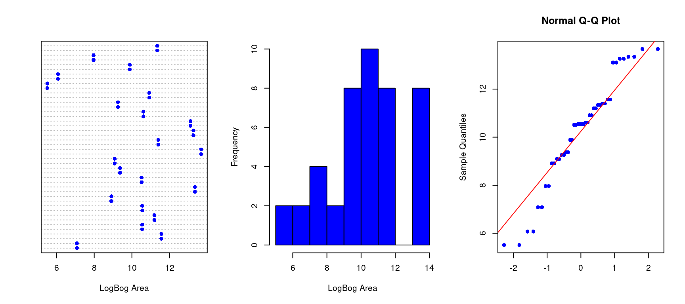
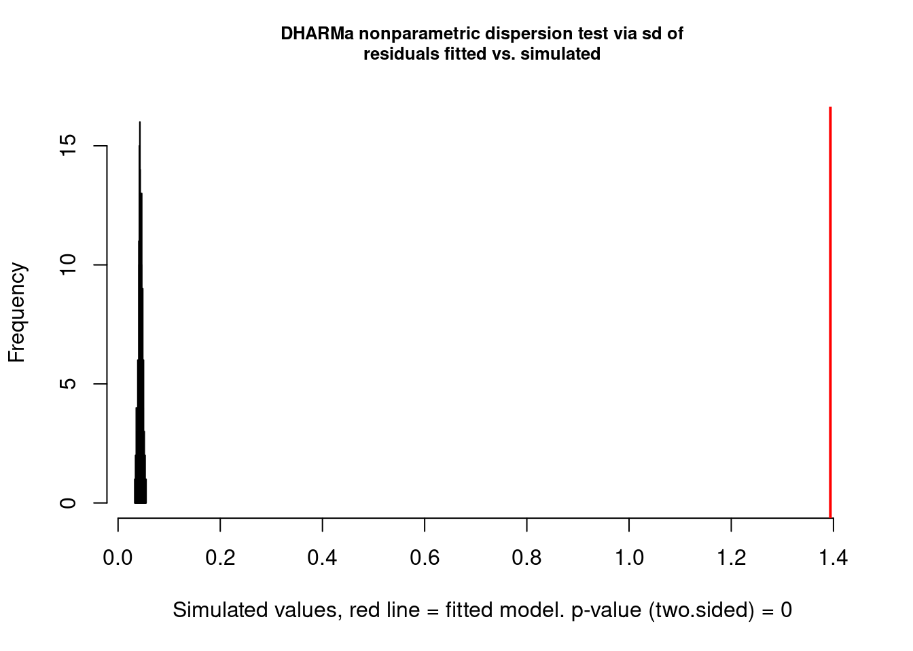
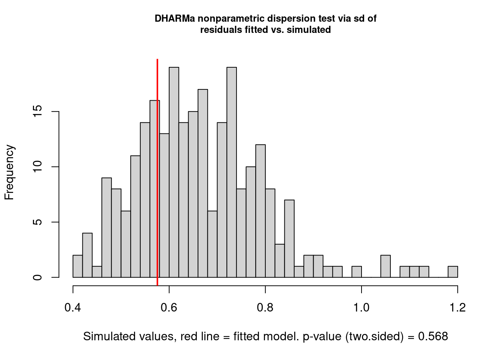
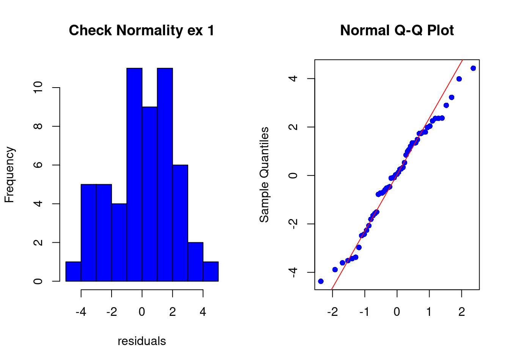
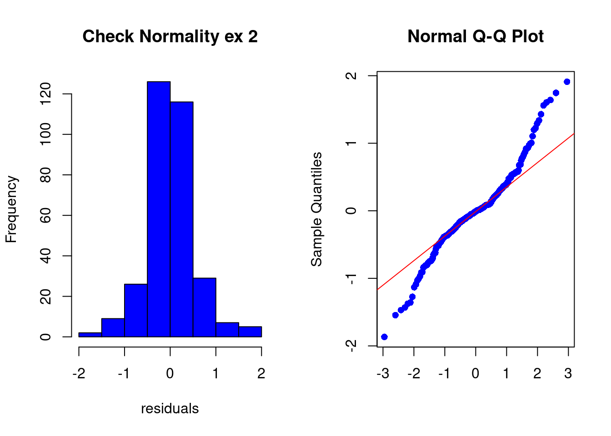
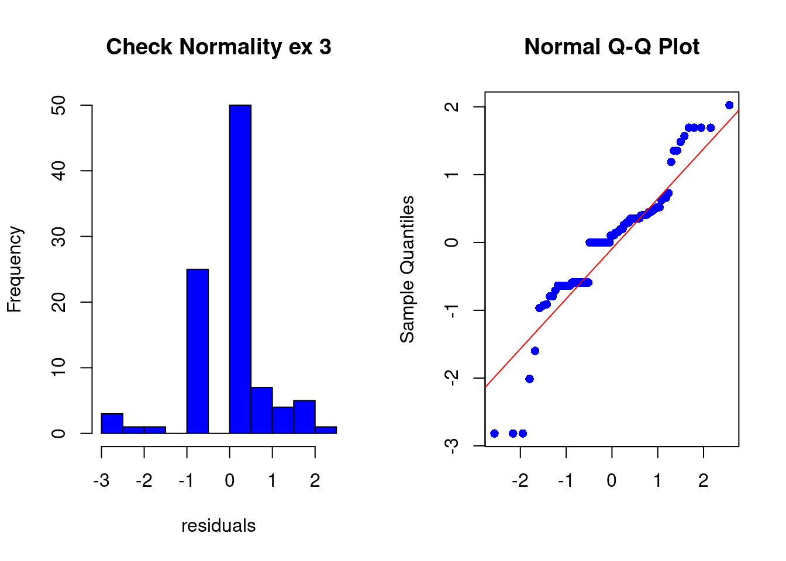
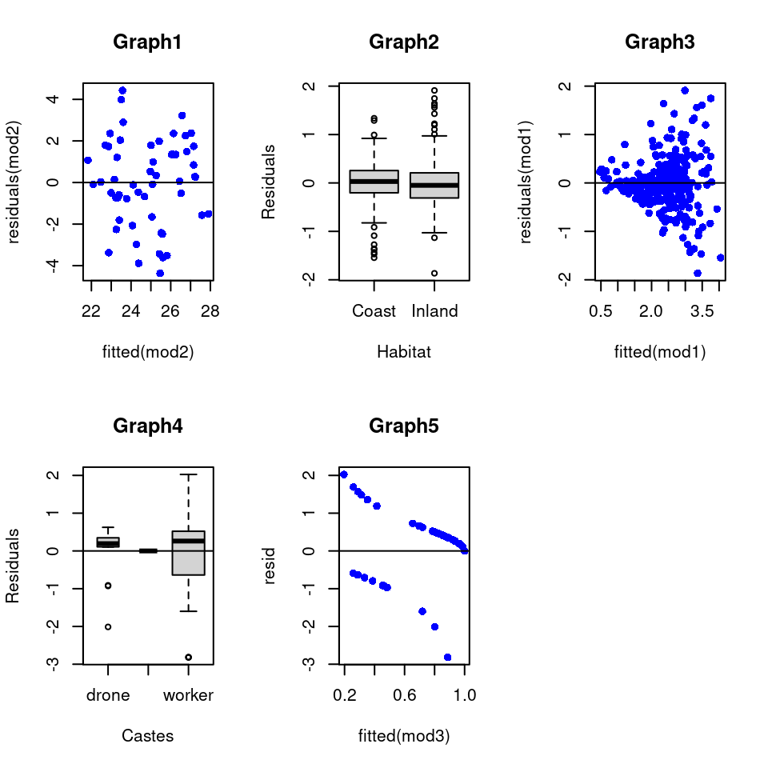

The purpose of statistics is to test a hypothesis. You would need to follow these steps:
1. The null and alternative hypotheses
They define different proposed relationships between dependent and independent variable(s).
Null hypothesis H0 = no relationship between dependent and independent variables.
Alternative hypothesis H1 = some expected relationship between the variables.
2. Calculation of the observed value Tobs
The observed value Tobs of the test statistic T is calculated from data given that the T variable has a probability distribution known under H0.
3. The P-value
To get this value, you need to calculate the probability of observing Tobs value in this T distribution knowing the distribution of the test statistic T under H0.
4. Rejection or validation of the hypothesis
If the P-value is less than (or equal to) \(\alpha\), then the null hypothesis is rejected in favor of the alternative hypothesis and if the P-value is greater than \(\alpha\) then the null hypothesis is not rejected. WARNING : never say that the null hypothesis is validated. You just know that you cannot reject it with the information you have. There could be relationships that have not been detected.
STATISTICAL MODELLING
Linear modelling is widely used in statistics to model observed data, by considering their random nature. It explains one dependent variable, noted Y (random variable, also called the response variable) in function to independent variables (also called predictors or explanatory variables), also observed/measured on statistical units of the sample. In this chapter, you will see different models corresponding to different statistical tests. It happens that several tests can be conducted for the same dataset and hypothesis ; in this case, you will select the most powerful test. It is the one with the lowest \(\beta\)-error (given at the end).
I. GENERAL LINEAR MODELS
First let’s get to know the most basic and simple linear models. We also call them ‘Gaussian’ because of their allure. They are used and validated following three eligibility conditions that you will find in part ‘Model validation’.
1) ANOVA
INTRODUCTION
ANOVA (Analysis of variance) is one of the most widespread techniques in data analysis. We use it to test the effect of one or more independent quantitative variables (Xs) on a dependent qualitative variable (Y). The categorical qualitative variables are named ‘factors’, et each factor has different levels that are chosen and fixed.
We consider 2 types of ANOVA: in the presence of a single variable X in the analysis, we follow a simple factor ANOVA; in the presence of several variables X, we follow a multiple factor ANOVA.
Simple factor ANOVA
The model takes the following form: \[ Y_{ij} = \mu + \alpha_{i} + \epsilon_{ij} \] where \(\mu\) is the overall mean, \(\alpha_{i}\) is the effect of the ith level of the single factor and \(\epsilon\) is the error term (i.e. residuals).
Multiple factor ANOVA
The ANOVA model depends on the experimental design: factorial or nested.
Full factorial design This design studies the influence of multiple factors and of their interactions on the variable of interest. We frequently want to test for differences in the response variable due to the multiple factors, called ‘main effects’. What we do is test the effects of each main effect separately, then whether or not these effects interact with each other (‘factor interactions’). Considering a factorial design with two factors, the model takes the form: \[ Y_{ijk} = \mu + \alpha_{i} + \beta_{j} + \gamma_{ij} +\epsilon_{ijk} \] where \(\mu\) is the overall mean, \(\alpha_{i}\) is the effect of the ith group of the first factor, and \(\beta_{j}\) is the effect of the jth group of the second factor, \(\gamma_{ij}\) is the interaction between both factors and \(\epsilon\) is the error term (i.e. residuals).
Nested ANOVA In this design, the levels of a factor are hierarchically nested within the levels of another factor. Considering a nested design with two factors in which B factor is nested in A factor, the model takes the form: \[ Y_{ijk} = \mu + \alpha_{i} + \beta_{j/i} +\epsilon_{ijk} \] where \(\mu\) is the overall mean, \(\alpha_{i}\) is the effect of the ith group of the first factor, and \(\beta_{j/i}\) is the effect of the jth group of the second factor nested in the ith group of the first factor and \(\epsilon\) is the error term (i.e. residuals).
Dataset presentation and objectives of the analysis
In this data analysis, we will focus on experimental data with two factors that are both applied to all statistical individuals. An ecologist wants to test the effects of metal contamination on the number of species found in sessile marine invertebrates (i.e. sponges). This ecologist would precisely like to know whether copper enrichment reduces species richness, but also know that the richness of invertebrates can depend on whether the substrate is vertical or horizontal. In order to do this, they made an experiment where species richness was recorded in replicate samples in each of the six combinations of copper enrichment (\(“None”\),\(“Low”\),\(“High”\)) and orientation (\(“Vertical”\),\(“Horizontal”\)). The experimental design is factorial because all levels of one treatment are represented in all levels of the other treatment (i.e. crossed factors).
In consequence, the factorial ANOVA will test whether there are:
any differences in species richness among the three levels of copper enrichment
any differences in species richness among the two levels of substrate orientation
any interactions between copper and orientation (i.e. the effect of the copper enrichment depends on the substrate orientation and reciprocally).
We have three null hypotheses:
there is no difference between the means for each level of copper enrichment, H0: \(\mu_{None}\)=\(\mu_{Low}\)=\(\mu_{High}\)
there is no difference between the means for each level of orientation, H0: \(\mu_{Vertical}\)=\(\mu_{Horizontal}\)
there is no interaction between both factors (i.e. if factor effects exist, the factors do not interact)
Let’s perform a two-factor ANOVA, something far better than running two separate single factor ANOVAs that contrast copper effects for each level of the substrate orientation, for 3 reasons:
we have more statistical power (higher degrees of freedom)
we can test whether the main effects interact or not
we reduce the risk of statistical error (i.e. we can’t forget that each time we perform a separate statistical analysis, we get \(\alpha\) and \(\beta\) risks)
# Check for presence of missing valuescolSums(is.na(datasessile))
Copper Orientation Richness
0 0 0
# There is no missing value.
Data exploration
Before any statistical analysis, we MUST explore the data in order to prevent any error. Here is the list of explorations to perform before modelling:
Check presence of outliers in \(Y\) and distribution of \(Y\) values
If \(X\) is a quantitative independent variable, check presence of outliers in X and distribution of X values
2b. If \(X\) is a qualitative independent variable, analyse the number of levels and the number of individuals per level
Analyse the potential relationships between \(Y\) and the \(X_{s}\)
Check presence of interactions between \(X_{s}\)
Check presence of collinearity between \(X_{s}\)
Statistical analysis
Model building
For the statistical modelling, we first analyse the full model (model containing all independent variables and interactions to test).
# Model formulationmod1<-lm(Richness~Copper+Orientation+Copper:Orientation,data=datasessile)# Comment : a simplest way to write thismod1<-lm(Richness~Copper*Orientation,data=datasessile)# Then we check for significancedrop1(mod1,test="F")
Single term deletions
Model:
Richness ~ Copper * Orientation
Df Sum of Sq RSS AIC F value Pr(>F)
<none> 467.0 135.12
Copper:Orientation 2 570.7 1037.7 179.03 32.995 4.341e-10 ***
---
Signif. codes: 0 '***' 0.001 '**' 0.01 '*' 0.05 '.' 0.1 ' ' 1
We here have a significant interaction between COPPER and ORIENTATION, shown by the test statistic, F value and its associated p-value (Pr(>F)). This means that the effect of one factor (COPPER) depends upon the other (ORIENTATION). In this example, it would mean that the effect of copper enrichment is not consistent between the vertical and horizontal habitats. This complexifies the interpretation of the main effects as a consequence. As the interaction is significant, the full model is the candidate model (i.e. the model containing only significant terms). To understand how factors and their interaction influence the species richness, we must analyse the coefficients of the model.
Model’s coefficients analysis
# Candidate model formulationmod1<-lm(Richness~Copper*Orientation,data=datasessile)# Coefficients of the modelsummary(mod1)
Call:
lm(formula = Richness ~ Copper * Orientation, data = datasessile)
Residuals:
Min 1Q Median 3Q Max
-5.700 -1.825 0.350 1.400 11.400
Coefficients:
Estimate Std. Error t value Pr(>|t|)
(Intercept) 55.400 0.930 59.573 < 2e-16 ***
CopperLow 0.400 1.315 0.304 0.762
CopperNone 14.200 1.315 10.797 4.22e-15 ***
Orientationvertical -11.700 1.315 -8.896 3.63e-12 ***
CopperLow:Orientationvertical 15.100 1.860 8.119 6.35e-11 ***
CopperNone:Orientationvertical 8.000 1.860 4.301 7.17e-05 ***
---
Signif. codes: 0 '***' 0.001 '**' 0.01 '*' 0.05 '.' 0.1 ' ' 1
Residual standard error: 2.941 on 54 degrees of freedom
Multiple R-squared: 0.8986, Adjusted R-squared: 0.8893
F-statistic: 95.76 on 5 and 54 DF, p-value: < 2.2e-16
This table detailed the coefficients of the model with coefficients associated with each level of the significant fixed factor. For each factor, one level is called ‘the baseline’, meaning that its coefficient is 0 (also called the reference level).
From this table, coefficients are : COPPER FACTOR
\(Copper_{High}\) = 0 (the baseline of the factor COPPER)
\(Copper_{Low}\) = \(0.4^{NS}\)
\(Copper_{None}\) = \(14.2^{***}\)
ORIENTATION FACTOR
\(Orientation_{Horizontal}\) = 0 (the baseline of the factor ORIENTATION)
If we’re able to detect any significant differences in the ANOVA, we are then interested in knowing exactly which levels of a given factor differ from one another, and which do not. Remember that a significant p value in the F-test we just ran would reject the null hypothesis where the means were the same across all factor levels, but not identify which were different from each other. Here, we have two factors with their own coefficients:
ORIENTATION FACTOR
\(Orientation_{Horizontal}\) = 0 (the baseline of the factor ORIENTATION)
\(Orientation_{Vertical}\)= \(-11.7^{***}\)
Those coefficients suggest that the species richness is lowest in vertical habitats.
COPPER FACTOR
\(Copper_{High}\) = 0 (the baseline of the factor COPPER)
\(Copper_{Low}\) = \(0.4^{NS}\)
\(Copper_{None}\) = \(14.2^{***}\)
Those coefficients suggest that the species richness is highest in absence of Copper enrichment (level \(None\) > \(High\)). But as the level \(High\) is the baseline, we can’t detect whether the levels \(None\) and \(Low\) are different or not. So, we must change the level baseline and re-analyse the coefficients of the model to detect difference or not between those two factor levels.
# Change the COPPER factor baseline: put 'Low' level as the baselinedatasessile$Copper2<-relevel(datasessile$Copper,ref="Low")# New model formulationmod2<-lm(Richness~Copper2*Orientation,data=datasessile)# Coefficients of the modelsummary(mod2)
Call:
lm(formula = Richness ~ Copper2 * Orientation, data = datasessile)
Residuals:
Min 1Q Median 3Q Max
-5.700 -1.825 0.350 1.400 11.400
Coefficients:
Estimate Std. Error t value Pr(>|t|)
(Intercept) 55.800 0.930 60.003 < 2e-16 ***
Copper2High -0.400 1.315 -0.304 0.76218
Copper2None 13.800 1.315 10.493 1.21e-14 ***
Orientationvertical 3.400 1.315 2.585 0.01246 *
Copper2High:Orientationvertical -15.100 1.860 -8.119 6.35e-11 ***
Copper2None:Orientationvertical -7.100 1.860 -3.817 0.00035 ***
---
Signif. codes: 0 '***' 0.001 '**' 0.01 '*' 0.05 '.' 0.1 ' ' 1
Residual standard error: 2.941 on 54 degrees of freedom
Multiple R-squared: 0.8986, Adjusted R-squared: 0.8893
F-statistic: 95.76 on 5 and 54 DF, p-value: < 2.2e-16
Now, the coefficients of the COPPER factor are: COPPER FACTOR
\(Copper_{Low}\) = 0 (the new baseline of the factor COPPER)
\(Copper_{High}\) = \(-0.4^{NS}\)
\(Copper_{None}\) = \(13.8^{***}\)
Those coefficients suggest that the species richness is highest in absence of Copper enrichment (\(None\) > \(Low\)). In conclusion, \(Richness_{Copper_{High}}\) = \(Richness_{Copper_{Low}}\)< \(Richness_{Copper_{None}}\)
Model explanation: R²
Let’s determine the part of the \(Y\) variation explained by the model.
# R² of the modelsummary(mod1)
Call:
lm(formula = Richness ~ Copper * Orientation, data = datasessile)
Residuals:
Min 1Q Median 3Q Max
-5.700 -1.825 0.350 1.400 11.400
Coefficients:
Estimate Std. Error t value Pr(>|t|)
(Intercept) 55.400 0.930 59.573 < 2e-16 ***
CopperLow 0.400 1.315 0.304 0.762
CopperNone 14.200 1.315 10.797 4.22e-15 ***
Orientationvertical -11.700 1.315 -8.896 3.63e-12 ***
CopperLow:Orientationvertical 15.100 1.860 8.119 6.35e-11 ***
CopperNone:Orientationvertical 8.000 1.860 4.301 7.17e-05 ***
---
Signif. codes: 0 '***' 0.001 '**' 0.01 '*' 0.05 '.' 0.1 ' ' 1
Residual standard error: 2.941 on 54 degrees of freedom
Multiple R-squared: 0.8986, Adjusted R-squared: 0.8893
F-statistic: 95.76 on 5 and 54 DF, p-value: < 2.2e-16
In this output, the adjusted R² is equal to 0.8893, which means that about 89% of the variance of species richness is explained by the model.
Model validation: Check the assumptions
See part III/.
2) ANCOVA
INTRODUCTION
ANCOVA (i.e. Analysis of Covariance) is a statistical technique widely used in various disciplines like the previous analysis presented, ANOVA and the linear regression . It is used to model the relationship between a quantitative dependent variable Y, called the response variable, and several independant variable X1, X2… called explanatory variables or predictors). The difference between ANOVA and ANCOVA, is that the predictors can be quantitative and qualitative. For example, we could use an ANCOVA to test whether the size (continuous), sex (categorical), reproductive status (categorical), habitat (categorical), age (continuous) of a sperm whale are good predictors of its weight (the response variable). As the ANCOVA includes quantitative and categorical independent variables, this technique represents between linear regression and ANOVA.
We can give an example and write the model with one continuous and one categorical independent variables, the model takes the form: \[ Y_{ij} = \mu + \alpha_{i}+ \beta.X_{ij}+\gamma_{i}.X_{ij}+\epsilon_{ij}\]
\(\mu\) is the overall mean, the intercept
\(\alpha_{i}\) is the effect of the modality i of the categorical variable)
\(\beta\) is the slope (amount of change in Y for each unit of the quantitative covariate), it is the effect of the quantitative variable\(X_{j}\)
\(\gamma_{i}\) is the interactive coefficient between the modality i of the factor and the quantitative covariate
\(\epsilon_{ij}\) is the error term (residuals). The inclusion of the error term \(\epsilon_{ij}\), also called the stochastic part of the model, that makes the model statistical rather than mathematical. The error term is drawn from a statistical distribution that integers the random variability in the response. In standard linear model, this is assumed to be a normal (Gaussian) distribution with parameter 0 et \(\sigma^2\), avec \(\sigma\) l’écart type.
ANCOVA EXAMPLE
Dataset presentation and objectives of the analysis
For this example, we will use data from a study performed in 1994 that concerns the fly, Anatalanta aptera, a wingless fly living in subantarctic islands, particularly in sea bird colonies. 320 individuals has been collected in the Crozet Island, living either on the coast or inland (i.e. mountain landscape). The goal of that study is to determine which variables may explain the dry weight of Anatalanta aptera. Dry weight represents total organic and inorganic matter in the tissue and is more accurate than measuring wet weight (using dry weight as a measure of animal growth tends to be more reliable). Then, the following life-history traits have been measured to try and explain the response variable Y= Dry weight. Those are the predictors.
Sex = the sex of a given individual, categorical variable
Habitat = the habitat of a given individual(‘Coast’ or ‘Inland’), categorical variable
Length = the length of a given individual, continuous variable
Width = the width of a given individual, continuous variable
WaterContent = the water content of a given individual, continuous variable
FatContent = the fat content of a given individual, continuous variable
DryWeight = the dry weight of a given individual, continuous variable
The underlying question for this research is simple; do variables drive the dry weight in Anatalanta aptera? Predictors being continuous and categorical, we are gonna perform an ANCOVA.
We must check whether the variables are correctly imported, i.e. they are of the right type. Sex and Habitat are ‘chr’, so we must transform them into factors.
For the statistical modelling, we first analyse the full model (model containing all independent variables to test). We will test the effects of the main effects (3 continuous and 2 categorical independent variables) and their interactions (by excluding interactions between quantitative independent variables). To get the candidate model we will perform a backward selection. It consist in testing the full model first, then we drop the least significant interaction, we perform this step until all the remaining interaction effect are significant. We do the qsame approach for the main effect. By following these two steps, candidate model is found. We use the function drop (F test) to test the significant at each step and choose the lest significant effect. Keep in mind that if a variable is involved in an interaction effect you must keep it as a main effect in the model.
Backward selection
# Model formulation#Full modelmod1<-lm(DryWeight~ Sex + Habitat + Width + WaterContent + FatContent + Sex:Habitat + Sex:Width + Habitat:Width + Sex:WaterContent + Habitat:WaterContent + Sex:FatContent + Habitat:FatContent ,data=dataFly)# Then we check for significancedrop1(mod1,test="F")
From this new significance list, we will exclude the interaction that is ‘the less significant’… and so on.
After the non significant interaction deletions, the model contains only 2 significant interactions = ‘Habitat:Width’ and ‘Habitat:WaterContent’. That means that the main effects ‘Habitat’, ‘Width’ and ‘WaterContent’ are maintained in the model as included in significant interactions.
Single term deletions
Model:
DryWeight ~ Sex + Habitat + Width + WaterContent + FatContent +
Habitat:Width + Habitat:WaterContent
Df Sum of Sq RSS AIC F value Pr(>F)
<none> 85.017 -408.15
Sex 1 0.5309 85.547 -408.16 1.9482 0.163775
FatContent 1 0.7347 85.751 -407.40 2.6961 0.101602
Habitat:Width 1 2.5775 87.594 -400.59 9.4592 0.002287 **
Habitat:WaterContent 1 3.5343 88.551 -397.12 12.9705 0.000368 ***
---
Signif. codes: 0 '***' 0.001 '**' 0.01 '*' 0.05 '.' 0.1 ' ' 1
From the previous listing, we decide to first exclude the ‘Sex’ factor.
As the ‘FatContent’ is still non significant, we exclude this main effect and we obtain the ‘Candidate Model’. This candidate model contains three main effects (we are keeping the main effect because the variables have interaction effects) and two interactions.
Single term deletions
Model:
DryWeight ~ Habitat + Width + WaterContent + Habitat:Width +
Habitat:WaterContent
Df Sum of Sq RSS AIC F value Pr(>F)
<none> 86.187 -407.78
Habitat:Width 1 2.7963 88.983 -399.56 10.188 0.0015570 **
Habitat:WaterContent 1 4.2441 90.431 -394.39 15.462 0.0001036 ***
---
Signif. codes: 0 '***' 0.001 '**' 0.01 '*' 0.05 '.' 0.1 ' ' 1
To understand how main effects and interactions influence the dry weight of the flies, we will analyse the coefficients of the model.
Model’s coefficients analysis
summary(mod1)
Call:
lm(formula = DryWeight ~ Habitat + Width + WaterContent + Habitat:Width +
Habitat:WaterContent, data = dataFly)
Residuals:
Min 1Q Median 3Q Max
-1.86592 -0.25639 -0.01119 0.23329 1.91099
Coefficients:
Estimate Std. Error t value Pr(>|t|)
(Intercept) 0.05228 0.66459 0.079 0.937354
HabitatInland -2.43270 0.78331 -3.106 0.002072 **
Width 0.21761 0.64964 0.335 0.737865
WaterContent 0.31332 0.04925 6.362 7.02e-10 ***
HabitatInland:Width 2.34365 0.73427 3.192 0.001557 **
HabitatInland:WaterContent -0.21378 0.05437 -3.932 0.000104 ***
---
Signif. codes: 0 '***' 0.001 '**' 0.01 '*' 0.05 '.' 0.1 ' ' 1
Residual standard error: 0.5239 on 314 degrees of freedom
Multiple R-squared: 0.6129, Adjusted R-squared: 0.6067
F-statistic: 99.42 on 5 and 314 DF, p-value: < 2.2e-16
This output presents a table detailing the coefficients of the model with coefficients associated with each significant main effect and interaction. Remind that for a factor, one level is called ‘the baseline’ meaning that its coefficient is 0 (also called the reference level). From this table, coefficients are:
HABITAT FACTOR
\(Habitat_{Coast}\) = 0 (the baseline of the factor Habitat)
You can determine the part of the \(Y\) variation explained by your model. See the output of the model summary.
#to get R² of the modelsummary(mod1)
Call:
lm(formula = DryWeight ~ Habitat + Width + WaterContent + Habitat:Width +
Habitat:WaterContent, data = dataFly)
Residuals:
Min 1Q Median 3Q Max
-1.86592 -0.25639 -0.01119 0.23329 1.91099
Coefficients:
Estimate Std. Error t value Pr(>|t|)
(Intercept) 0.05228 0.66459 0.079 0.937354
HabitatInland -2.43270 0.78331 -3.106 0.002072 **
Width 0.21761 0.64964 0.335 0.737865
WaterContent 0.31332 0.04925 6.362 7.02e-10 ***
HabitatInland:Width 2.34365 0.73427 3.192 0.001557 **
HabitatInland:WaterContent -0.21378 0.05437 -3.932 0.000104 ***
---
Signif. codes: 0 '***' 0.001 '**' 0.01 '*' 0.05 '.' 0.1 ' ' 1
Residual standard error: 0.5239 on 314 degrees of freedom
Multiple R-squared: 0.6129, Adjusted R-squared: 0.6067
F-statistic: 99.42 on 5 and 314 DF, p-value: < 2.2e-16
In this output, you get that the adjusted R² = 0.6067. That means that about 61% of the variance of the dry weight of the flies is explained by its relationship with their habitat, water content and width and the interactions between these predictors.
Model expression
You can write the model with the coefficient. Be careful: you have a different expression for each modality. \[ Dry\:Weight = 0.05\:+\:(Habitat_{Coast} = 0 \:;\:Habitat_{Inland} = -2.43^{**}) \]\[ +\:0.21^{NS}. Width\:+\:0.31^{***}. Water\:Content \]\[ + (if\:Habitat=Inland:\:+ 2.34^{***}. Width\: -\: 0.21^{***}.Water\:Content)\]
Biological interpretation
Before drawing any conclusions from your result, you have to validate the model (part model validation). The assumptions of ANCOVA are the same as for all general linear models (i.e. regressions, ANOVAs), you have to check independence of residuals, normality of residuals and homogeneity of variances.
3) REGRESSION
INTRODUCTION
You have certainly used the technique of regression many times in various exercises. It is used to model the relationship between a quantitative dependent variable\(Y\) (the response, that is continuous, and one or several explanatory quantitative variable(s) (the predictors, that are independant). \(X_{1}\),\(X_{2}\)…\(X_{p}\). For example, we could use a linear regression to test whether the weight of a dog (i.e. the explanatory variable) is a good predictor of its lifespan (the response variable).
MODEL WRITING
The general model is written: \[ Y_{i} = \alpha + \beta_{j}.X{ij}+ \epsilon_{i}\]\[ i=1,...,n\]\[ j=1,...,p\] The inclusion of the error term \(\epsilon\), also called the stochastic part of the model, makes the model statistical rather than mathematical. The error term is drawn from a statistical distribution that integers the random variability in the response. In standard linear regression, this is assumed to be a normal (Gaussian) distribution.
There are two different regression types:
• the simple linear regression includes a single \(X\) in your analysis. The model takes the form: \[ Y = \alpha + \beta.X + \epsilon \] where \(\alpha\) is the intercept (value of \(Y\) when \(X\) = 0), \(\beta\) is the regression slope (amount of change in \(Y\) for each unit of \(X\)), and \(\epsilon\) is the error term (i.e. residuals).
• the multiple linear regression includes several \(X_{s}\) in your analysis. The model takes the form: \[ Y_{i} = \alpha + \beta_{1}.X{i1}+ \beta_{2}.X{i2}+\beta_{3}.X{i3}+...\beta_{p}.X{ip}+ \epsilon_{i}\]
REGRESSION EXAMPLE:
Dataset presentation and objectives of the analysis
This data was published in ‘Latitudinal variation in light levels drives human visual system size’. Eiluned Pearce and Robin Dunbar. Biol. Lett. published online 27 July 2011 (http://doi:10.1098/rsbl.2011.0570). Ambient light levels influence visual system size in birds and primates and Pearce and Dunbar (2011) argue that the same is true for humans. Using linear regression techniques, they want to test the relationship between (absolute) latitude and human orbital volume, an index of eyeball size. Pearce and Dunbar (2011) measured cranial capacity (CC), orbital volume and foramen magnum (FM) dimensions for 73 healthy adult crania from the Oxford University Museum of Natural History and Duckworth Collection, University of Cambridge.
List of the variables: - MeanOrbitalVolume = Index for eyeball size, continuous variable (the response)
CranialCapacity = measure of the volume of the interior of the cranium, continuous variable
Minimum_Illuminance = log scale of the minimum of illuminance of the sample site, continuous variable
Minimum_Temperature = Minimum temperature of the sample site, continuous variable
AbsoluteLatitude = Absolute values of latitude of the sample, continuous variable
Population = country/region of the sample, Categorical variable
The response variable is mean orbital volume and the rest are assumed covariates. The Population variable is a descriptor of the samples, so not included in the modelling. Each value for orbital volume represents the mean of 3 replicate measurements from the same skull.
Question: which covariates drive the mean orbital volume?
#There is no missing value.# Simplify the names of the variablesdataHVS$Pop<-dataHVS$PopulationdataHVS$Lat<-dataHVS$AbsoluteLatitudedataHVS$Capacity<-dataHVS$CranialCapacitydataHVS$Illumi<-dataHVS$Minimum_IlluminancedataHVS$Temp<-dataHVS$Minimum_TemperaturedataHVS$Response<-dataHVS$MeanOrbitalVolume
Data exploration
See part 1).
Statistical analysis
Model building
You need to first analyse the full model containing all the independent variables in order to test their significance (i.e. see if they are relevant in the modelling) and decide whether you keep them or not.
# Model formulationmod1<-lm(Response~Lat+Capacity,data=dataHVS)# Then we check for significance, here with an F-Testdrop1(mod1,test="F")
Single term deletions
Model:
Response ~ Lat + Capacity
Df Sum of Sq RSS AIC F value Pr(>F)
<none> 236.18 86.150
Lat 1 48.830 285.01 94.486 10.751 0.001863 **
Capacity 1 28.079 264.26 90.328 6.182 0.016155 *
---
Signif. codes: 0 '***' 0.001 '**' 0.01 '*' 0.05 '.' 0.1 ' ' 1
Look at the test statistic, the F value and its associated p-value (Pr). They show that both covariates are significant. So here, no need to go further, because the full model is the candidate model. To understand how covariates influence the response (the orbital volume), we analyse coefficients of the model (i.e. the \(\beta_{j}\)).
Model’s coefficients analysis
# Coefficients of the modelsummary(mod1)
Call:
lm(formula = Response ~ Lat + Capacity, data = dataHVS)
Residuals:
Min 1Q Median 3Q Max
-4.3661 -1.5412 0.0534 1.6091 4.4284
Coefficients:
Estimate Std. Error t value Pr(>|t|)
(Intercept) 15.406367 3.063999 5.028 6.24e-06 ***
Lat 0.048910 0.014917 3.279 0.00186 **
Capacity 0.005836 0.002347 2.486 0.01616 *
---
Signif. codes: 0 '***' 0.001 '**' 0.01 '*' 0.05 '.' 0.1 ' ' 1
Residual standard error: 2.131 on 52 degrees of freedom
Multiple R-squared: 0.3701, Adjusted R-squared: 0.3459
F-statistic: 15.28 on 2 and 52 DF, p-value: 6.034e-06
This table detailed the coefficients of the model with coefficients associated with each covariate. You can deduce the candidate model: \[ Orbital\:Volume = 15.4 \:+\: 0.04.Latitude\: +\: 0.005.Cranial\:Capacity \] Those coefficients suggest that the orbital volume increases with the latitude (in relation with Temperature and Illuminance) and the cranial capacity.
Model explanation: R²
Let’s determine the part of the \(Y\) variation explained by your model.
# R² of the modelsummary(mod1)
Call:
lm(formula = Response ~ Lat + Capacity, data = dataHVS)
Residuals:
Min 1Q Median 3Q Max
-4.3661 -1.5412 0.0534 1.6091 4.4284
Coefficients:
Estimate Std. Error t value Pr(>|t|)
(Intercept) 15.406367 3.063999 5.028 6.24e-06 ***
Lat 0.048910 0.014917 3.279 0.00186 **
Capacity 0.005836 0.002347 2.486 0.01616 *
---
Signif. codes: 0 '***' 0.001 '**' 0.01 '*' 0.05 '.' 0.1 ' ' 1
Residual standard error: 2.131 on 52 degrees of freedom
Multiple R-squared: 0.3701, Adjusted R-squared: 0.3459
F-statistic: 15.28 on 2 and 52 DF, p-value: 6.034e-06
You can read the adjusted R² = 0.345. That means that about 35% of the variance of the Orbital Volume is explained by its relationship with the Latitude (Temperature & Illuminance) and the Cranial Capacity.
Model validation: check the assumptions
See III/.
You must want to have the best visual representation of your model !
# set your variables on each axisx <- dataHVS$Capacityy <- dataHVS$Latz <- dataHVS$Response# Remind the candidate model with thesemod1<-lm(z~x+y)# Create a grid from the x and y values (min to max) and predict values for every point: this is the base of the regression planegrid.lines =40x.pred <-seq(min(x), max(x), length.out = grid.lines)y.pred <-seq(min(y), max(y), length.out = grid.lines)xy <-expand.grid( x = x.pred, y = y.pred)z.pred <-matrix(predict(mod1, newdata = xy),nrow = grid.lines, ncol = grid.lines)# Create the fitted points for droplines to the surfacefitpoints <-predict(mod1)# Scatter plot with regression plane, in the format that you likescatter3D(x, y, z, pch =19, cex =1,colvar =NULL, col="red", theta =30, phi =10, bty="b",xlab ="Cranial Capacity", ylab ="Latitude", zlab ="Response", surf =list(x = x.pred, y = y.pred, z = z.pred, facets =TRUE, fit = fitpoints, col=ramp.col (col =c("dodgerblue3","seagreen2"), n =300, alpha=0.9), border="black"), main =" ")

So ! Does it look cool to you ?
II/ GENERALIZED LINEAR MODELS
In absence of normality of residuals and homoscedasticity only, you may use Generalized Linear Models. You will need a link function to ‘force’ the linear relationship between Y and the independant variables (see examples).
1) Binomial Law
INTRODUCTION
X is a binary variable with two modalities: 1 (success) and 0 (failure). The probability of success is: \[ P(X = 1) = \pi \] Then, Y, a variable corresponding to N randoms and independent draws of X, follows a binomial law whose parameters are N and \(\pi\).
The density function of Y is: \[ f(y;\pi)=\binom{N}{y}.\pi^{y}.(1-\pi)^{(N-y)}\] The expectancy and the variance of Y are: \[E(Y)=N.\pi\:\:\:\:\:\:\:\:\:\:\:\:\:\:\:\:\:var(Y)=N.\pi.(1-\pi)\]
In the generalized model, the link function for Y is the function “logit” such that: \[logit(\mu_{y})= \alpha+ \beta_{1}.X{i1}+ \beta_{2}.X{i2}+\beta_{3}.X{i3}+...\beta_{p}.X{ip} = \eta \] Thus, the predicted value is: \[\mu_{y}= \frac {e^{\eta}}{1+e^{\eta}} \]
BINOMIAL LAW EXAMPLE
Dataset presentation and objectives of the analysis
Let’s apply this on the example of the dataset “badger.txt” from the book: Zuur et al. 2009 “Mixed effects models and extensions in ecology with R” - Springer. This dataset comes from a survey carried out on 36 farms in South-West England over 8 consecutive seasons running from autumn 2003 to summer 2005. It contains 277 rows and the columns:
year: Calendar year
season: spring, summer, autumn, winter
farm_code: farm identifier
survey: which of the 8 survey occasions (i.e. a time indicator)
badger_activity: presence-absence of signs of badgers activity
N_setts_in_fields: number of badger ‘homes’ observed
N_buildings: number of buildings on farm
N_cattle_in_buildings: number of cattle housed in the building yard
accessible_feed_store_present: presence-absence of a feed’s store in farm
accessible_cattle_house_present:presence-absence of a direct access to cattle house
accessible_feed_present: presence-absence of accessible feed on farm
grass_silage: presence-absence of grass_silage
cereal_silage: presence-absence of cereal_silage
hay_straw: presence-absence of hay_straw
cereal_grains: presence-absence of cereal_grains
concentrates: presence-absence of concentrates
sugar_beet: presence-absence of sugar beet
molasses: presence-absence of molasses
For the example, the binary variable that will be explained is the badger activity and any other variables are taken as explanatory variables. The objective is to find a model that predict the occurrence of signs of badger activity on farms in order to find a way to reduce the rates of badgers’ visits to farms. This objective is motivated by the numerous transmissions of bovine tuberculosis from badgers to cattle.
Let’s import the dataset and perform a binomial generalized linear model.
Data exploration
See part I/1).
Statistical analysis
Model building
We will use a backward selection with the most complete model, considered here, for a question of simplicity, as the model with all the explanatory variables but no interactions.
# Let's define the model with the function "glm" with the family "binomial" and the link function "logit" mod1<-glm(Activity~N_setts + N_buildings + N_cattle + season + feed_store + cattle_house + feed + grass + cereal + straw + grains + concen + sugar,data=dataBadger, family=binomial(link=logit))# We can use then the function drop1 to check the significancedrop1(mod1,test="Chi")
This time, all of the variables are significant. Let’s check the coefficient :
# Coefficients of the modelsummary(mod2)
Call:
glm(formula = Activity ~ N_setts + N_cattle, family = binomial(link = logit),
data = dataBadger)
Coefficients:
Estimate Std. Error z value Pr(>|z|)
(Intercept) -3.638947 0.408344 -8.911 < 2e-16 ***
N_setts 0.268288 0.042921 6.251 4.09e-10 ***
N_cattle 0.003486 0.001766 1.974 0.0483 *
---
Signif. codes: 0 '***' 0.001 '**' 0.01 '*' 0.05 '.' 0.1 ' ' 1
(Dispersion parameter for binomial family taken to be 1)
Null deviance: 246.17 on 277 degrees of freedom
Residual deviance: 191.84 on 275 degrees of freedom
AIC: 197.84
Number of Fisher Scoring iterations: 5
All the coefficients are significant.
The candidate model is: \[ logit(Presence\:of\:badger\:activity) = - 3.64 0.27*Number\:of\:Setts\: +\: 0.004* Number\:of\:Cattles \]
Model explanation
However there is no \(R^2\) in Generalized Linear Models, we can still calculate a $pseudo:R^2* to estimate how far the candidate model is from the null model by determining the distance between deviance of the null model and the residual deviance of the candidate model.
# Estimate of deviance explained(mod2$null.deviance-mod2$deviance)/mod2$null.deviance
[1] 0.2207131
# Some others estimates of deviance explained - package 'rcompanion' => code lines : nagelkerke(mod2)
From these code lines, we deduce that the estimate of deviance explained is 22 %. We found about the same thing with the \(Pseudo\:R^2\) estimate (package ‘rcompanion’).
Model validation: check the assumptions
See III/.
Nota Bene : For this example, the validation will show a dependency that could be resolved by using a mixed model with “Farm_code” as random factor.
2) POISSON LAW
INTRODUCTION
Here we will focus on count data. This count data is a positive discrete variable. There are two types of distribution for this type of data. It can follow a Poisson or a Negative Binomial law. We will first focus on a Poisson law.
For the Poisson law, we have: \[ E(y)= Var(y)=\lambda \]
We can write the distribution under a Poisson distribution as follows: \[Pr(Y=y)=\frac{e^{-\lambda}.\lambda^y}{y!}\]\(y\) permits to count the number of occurrences and \(\lambda\) is the mean and the variance of the Poisson distribution.
The link function of the Poisson law in the Generalized Linear model is log and can be written like that: \[log(\mu_{y})= \alpha+ \beta_{1}.X{i1}+ \beta_{2}.X{i2}+\beta_{3}.X{i3}+...\beta_{p}.X{ip} = \eta \]
By applying the inverse link function to \(\eta\), we obtain the predicted values of Y: \[\mu_{y}= e^{\alpha+ \beta_{1}.X{i1}+ \beta_{2}.X{i2}+\beta_{3}.X{i3}+...\beta_{p}.X{ip}} = e^{\eta} \] Let’s take an example to illustrate the use of the Poisson law:
POISSON LAW EXAMPLE
###Dataset representation and objectives of the analysis
The study of Gotelli and Ellison in 2002 is a good example to apply the Poisson law. It is named “Biogeography at a regional scale: determinants of ants species density in New England bogs and forests”. At each of 22 sites, 25 pitfall traps were set in two 8x8m arrays, one in the center of the bog and one in adjacent upland forest 50 to 500m from the corresponding bog. Traps are treated as 50 independent replicate observations. The data are in the file BogAnts.txt.
# Dataset importation ants<-read.table("BogAnts.txt", dec =".", header =TRUE) ants$Location<-as.factor(ants$Location)str(ants)
# Check for presence of missing valuescolSums(is.na(ants))
Site Latitude Elevation Area Location Nsp
0 0 0 0 0 0
# There is no missing value.
We have 6 variables. The first one gives the site name. Latitude, Area (of the bog) and Elevation are covariates for each site. Location is a qualitative variable (‘Bog’ or ‘Forest’). The response variable is the last one variable (Nsp) which give the number of ant species found in the traps, in other words the ant species richness.
For this research we can wonder: which continuous or categorical variables drive the species richness of ants in bogs from New England ?
Data exploration
See I/1).
However, before continuing, we need to transform the variable ‘Area’, as in the exploration we can see a presence of outliers due to presence of very extensive bogs. We will therefore perform a log-transformation of this covariate.
par(mfrow=c(1,3))# Bog Area# Cleveland plotdotchart(ants$Area,pch=16,col='blue',xlab='Bog Area')# Histogramhist(ants$Area,col='blue',xlab="Bog Area",main="")# Quantile-Quantile plotqqnorm(ants$Area,pch=16,col='blue',xlab='')qqline(ants$Area,col='red')

par(mfrow=c(1,3))# Log-transformation for the 'Area' variable : ants$LogArea<-log(ants$Area)# Log Bog Area# Cleveland plotdotchart(ants$LogArea,pch=16,col='blue',xlab='LogBog Area')# Histogramhist(ants$LogArea,col='blue',xlab="LogBog Area",main="")# Quantile-Quantile plotqqnorm(ants$LogArea,pch=16,col='blue',xlab='')qqline(ants$LogArea,col='red')

Now we can use the ‘Area’ variable.
Statistical analysis
Model building
As every model building, we will search for the candidate model by first analysing the full model with all the independent variables and their interactions. Then a backward selection will be used to select the best model based on term significance. Successively, the non-significant interactions are deleted, and then the non-significant main effects. However, a non-significant main effect is deleted only if it is non-significant AND not contained in a significant interaction.
Here we perform a Poisson generalized linear model with these code lines:
# The model is : mod1<-glm(Nsp~ Location + Latitude + Elevation + LogArea + Location:Latitude + Location:Elevation+ Location:LogArea, data=ants,family=poisson(link="log"))# To check the significancedrop1(mod1,test="Chi")
Here any interaction is significant. We delete the less significant interaction : Location:Latitude and do this code lines until there are only significant effects.
Here all the effects are significant. So we can stop the backward selection and conclude with this the selected model: Nsp~Location + Elevation + Latitude
It is necessary to analyse the coefficients of the model in order to understand how the main effects influence the ant species richness in bogs.
Model’s coefficients analysis
# Coefficients of the modelsummary(mod1)
Call:
glm(formula = Nsp ~ Location + Latitude + Elevation, family = poisson(link = "log"),
data = ants)
Coefficients:
Estimate Std. Error z value Pr(>|z|)
(Intercept) 11.9368121 2.6214970 4.553 5.28e-06 ***
LocationForest 0.6354389 0.1195664 5.315 1.07e-07 ***
Latitude -0.2357930 0.0616638 -3.824 0.000131 ***
Elevation -0.0011411 0.0003749 -3.044 0.002337 **
---
Signif. codes: 0 '***' 0.001 '**' 0.01 '*' 0.05 '.' 0.1 ' ' 1
(Dispersion parameter for poisson family taken to be 1)
Null deviance: 102.76 on 43 degrees of freedom
Residual deviance: 40.69 on 40 degrees of freedom
AIC: 209.04
Number of Fisher Scoring iterations: 4
So we can write the model like that: \[ log(Species\:Richness) = 11.93 + (Location_{Bog} = 0 ;\:Location_{Forest} = +0.63^{***})\:- 0.23^{***}.Latitude\: -0.001^{***}. Elevation \] Be careful here, for a factor, there is a level called “the baseline” which mean that its coefficient is 0. It is the reference level.
Model explanation
In generalized linear models, there is no R2, so we need to calculate a pseudo R2 with the distance between the null model deviance and the residual deviance of the model with this formula: \[Pseudo\:R^2=100\:.\:\frac{Null\:Deviance- Residual\:Deviance}{Null\:Deviance}\]
# We can have other pseudo R2 with the package 'rcompanion'nagelkerke(mod1)
$Models
Model: "glm, Nsp ~ Location + Latitude + Elevation, poisson(link = \"log\"), ants"
Null: "glm, Nsp ~ 1, poisson(link = \"log\"), ants"
$Pseudo.R.squared.for.model.vs.null
Pseudo.R.squared
McFadden 0.235913
Cox and Snell (ML) 0.756039
Nagelkerke (Cragg and Uhler) 0.757956
$Likelihood.ratio.test
Df.diff LogLik.diff Chisq p.value
-3 -31.036 62.073 2.1197e-13
$Number.of.observations
Model: 44
Null: 44
$Messages
[1] "Note: For models fit with REML, these statistics are based on refitting with ML"
$Warnings
[1] "None"
So here, the model explains 60.4% of the deviance, but with the others estimate, we found the model explain about 75% of the deviance. Now, it is necessary to check the assumptions of the model to validate. See the part dedicated to this at the end.
3) NEGATIVE BINOMIAL LAW
INTRODUCTION
The Negative Binomial distribution has been configured in a number of different ways in the statistical literature. Perhaps the most common way to parameter is to see the Negative Binomial distribution arising as a distribution of the number of failures (X) before the r^th success in independent trials, with success probability p in each trial (consequently, r > 0 and 0 < p > 1). In such a case the probability mass function can be expressed as: \[Pr(X=x|r,p)=\frac {\Gamma(x+r)}{x!.\Gamma(r)}.p^r.(1-p)^x\]
and the random variable X has the expectation (theoretical mean): \[\mu =\frac{r.(1 - p)}{p}\]
and variance: \[\sigma^2 = \frac{r.(1 – p)}{p^2}\]
In a NB Generalized Linear model, the link function is log so that: \[log(\mu_{y})= \alpha+ \beta_{1}.X{i1}+ \beta_{2}.X{i2}+\beta_{3}.X{i3}+...\beta_{p}.X{ip} = \eta \]
The predicted values of Y is obtained by applying the inverse link function to \(\eta\). \[\mu_{y}= e^{\alpha+ \beta_{1}.X{i1}+ \beta_{2}.X{i2}+\beta_{3}.X{i3}+...\beta_{p}.X{ip}} = e^{\eta} \] The negative binomial model has a NB error structure. This error structure allows, among other things, to correctly specify the relationship between the mean and the variance. This relationship is used by the maximum likelihood approach to estimate the coefficients and standard errors of the generalized linear model parameters.
Let’s take an example to illustrate the use of the Negative binomial law:
NEGATIVE BINOMIAL LAW EXAMPLE
Dataset presentation and objectives of the analysis
The study of Timi and Poulin in 2003 is a good example to apply the Negative binomial law. We will use a subset of the original data. At each of 4 stations, fish sample were collected, with a total of 522 individual of anchovy. These fish were examined for parasites in order to understand the parasite community structure across the host population of anchovy. The data are in the file FishParasite.txt The response variable is “Number”, which represents the total number of parasites found in the fish. It is a count variable. There are 3 explicative variables: “Sex” (of the fish), “Length” (of the fish) and “Area”. Sex and Length are continuous, and Area is a categorical variable with 4 categories (A, B, C or D). Here we only consider the interaction between Length and Area.
Let’s begin quickly with a Poisson model in order to see the problems and then apply a Negative Binomial model.
Data exploration
See part I/1).
Statistical analysis
Model building
We perform a backward selection as explained previously, with a Poisson model:
# Model formulationmod1<-glm(Number~ Sex + Area + Length + Area:Length ,data=para ,family=poisson(link="log"))# Then we check for significancedrop1(mod1,test="Chi")
Single term deletions
Model:
Number ~ Sex + Area + Length + Area:Length
Df Deviance AIC LRT Pr(>Chi)
<none> 10030 12300
Sex 1 10066 12334 35.91 2.071e-09 ***
Area:Length 3 10953 13217 922.60 < 2.2e-16 ***
---
Signif. codes: 0 '***' 0.001 '**' 0.01 '*' 0.05 '.' 0.1 ' ' 1
summary(mod1)
Call:
glm(formula = Number ~ Sex + Area + Length + Area:Length, family = poisson(link = "log"),
data = para)
Coefficients:
Estimate Std. Error z value Pr(>|z|)
(Intercept) 0.2067538 0.1056462 1.957 0.0503 .
SexMale -0.1041194 0.0173649 -5.996 2.02e-09 ***
AreaB 1.2976071 0.1447951 8.962 < 2e-16 ***
AreaC -2.6680762 0.1814043 -14.708 < 2e-16 ***
AreaD -5.4800806 0.2431050 -22.542 < 2e-16 ***
Length 0.0229176 0.0008601 26.645 < 2e-16 ***
AreaB:Length -0.0070126 0.0011600 -6.045 1.49e-09 ***
AreaC:Length 0.0162007 0.0012135 13.350 < 2e-16 ***
AreaD:Length 0.0316032 0.0015890 19.889 < 2e-16 ***
---
Signif. codes: 0 '***' 0.001 '**' 0.01 '*' 0.05 '.' 0.1 ' ' 1
(Dispersion parameter for poisson family taken to be 1)
Null deviance: 19911 on 520 degrees of freedom
Residual deviance: 10030 on 512 degrees of freedom
AIC: 12300
Number of Fisher Scoring iterations: 5
Here the interaction between Length and Area is significant, so we keep both variables. And Sex is also significant. So the full model is the candidate model. To see if we can apply the Poisson model, we test the overdispersion. Sometimes, the variance of the response variable may be higher than supposed by the Poisson law. If the parameter is greater than 1.5, we can say that there is overdispersion and the standard errors of the coefficient estimates are biased.
Let’s check the overdispersion in the model with a DHARMa non parametric dispersion test:
# Overdisperion checking of the Poisson model# Scale parameter calculationE1 <-resid(mod1, type ="pearson") # (Y - mu) / sqrt(mu)N <-nrow(para)p <-length(coef(mod1))sum(E1^2) / (N - p)
[1] 24.72358
# Use simulations for parameter estimation (package DHARMa)testDispersion(mod1)

DHARMa nonparametric dispersion test via sd of residuals fitted vs.
simulated
data: simulationOutput
dispersion = 31.727, p-value < 2.2e-16
alternative hypothesis: two.sided
The overdispersion index is largely over 1.5, which means that there is an overdispersion in the model. So, the Poisson model can’t be apply and analyse. There are some reasons of overdispersion like for example: the presence of outliers, a dependency, a non linear relationship, the use of the wrong link function…
We will change and use a Negative Binomial model and recalculate the overdispersion once we have found the model.
# Model formulationmodNB<-glm.nb(Number~ Sex + Area + Length + Area:Length ,data=para)# Then we check for significancedrop1(modNB,test="Chi")
Single term deletions
Model:
Number ~ Sex + Area + Length + Area:Length
Df Deviance AIC LRT Pr(>Chi)
<none> 581.89 4182.9
Sex 1 582.70 4181.7 0.814 0.3669
Area:Length 3 637.58 4232.6 55.698 4.874e-12 ***
---
Signif. codes: 0 '***' 0.001 '**' 0.01 '*' 0.05 '.' 0.1 ' ' 1
We have a significant effect for the interaction between Area and Length but not for the main effect Sex. We need to keep the main factor Area and Length and delete the variable Sex, contrary to the Poisson model.
Here, the interaction is still significant, with the two main effect. So we have found the candidate model. Now we need to test the overdispersion, the same way as before.
[1] 1.345759

DHARMa nonparametric dispersion test via sd of residuals fitted vs.
simulated
data: simulationOutput
dispersion = 0.86643, p-value = 0.568
alternative hypothesis: two.sided
We found 1.35, which is below/under 1.5. So we succeed to delete the overdispersion. The DHARMa test validates the absence of overdispersion.
Model explanation
Now we can examine the coefficients of the candidate model in order to understand how the number of parasites in fish is influenced.
# Coefficients of the modelsummary(modNB)
Call:
glm.nb(formula = Number ~ Area + Length + Area:Length, data = para,
init.theta = 1.326438087, link = log)
Coefficients:
Estimate Std. Error z value Pr(>|z|)
(Intercept) -0.440440 0.459468 -0.959 0.3378
AreaB 1.639419 0.652440 2.513 0.0120 *
AreaC -0.613328 0.825456 -0.743 0.4575
AreaD -5.421868 0.718160 -7.550 4.36e-14 ***
Length 0.028189 0.004059 6.944 3.80e-12 ***
AreaB:Length -0.010137 0.005593 -1.812 0.0699 .
AreaC:Length 0.002096 0.005866 0.357 0.7209
AreaD:Length 0.029865 0.005618 5.316 1.06e-07 ***
---
Signif. codes: 0 '***' 0.001 '**' 0.01 '*' 0.05 '.' 0.1 ' ' 1
(Dispersion parameter for Negative Binomial(1.3264) family taken to be 1)
Null deviance: 1096.8 on 520 degrees of freedom
Residual deviance: 581.9 on 513 degrees of freedom
AIC: 4183.7
Number of Fisher Scoring iterations: 1
Theta: 1.3264
Std. Err.: 0.0866
2 x log-likelihood: -4165.6880
So, the candidate model is: \[ log(Number\:of\:Parasites) = -0.44 + (Area_{A} = 0 ;\:Area_{B} = +1.64;\:Area_{C} = -0.61;\:Area_{D} = -5.42)\]\[ +\: 0.028.Length\:+ (if\:Area=B: - 0.010. Length;\:if\:Area=C: + 0.002. Length ;\:if\:Area=C: + 0.029.Length) \]
Be careful here! As we saw previously, there is always a modality of the factor which is the baseline, and every modality of this factor is compared to the baseline. So if a modality of the factor is significant, it means that there is a difference between this modality and the baseline. So in order to test which modality is different from one another, we need to change the baseline.
As in every Generalized Linear Models, there is no R2. So we will calculate the pseudo R2 with the formula: \[Pseudo\:R^2=100\:.\:\frac{Null\:Deviance-Residual\:Deviance}{Null\:Deviance}\]
Let’s perform it on R:
# Estimate of deviance explained(modNB$null.deviance-modNB$deviance)/modNB$null.deviance
[1] 0.4694521
# Some others estimates of deviance explained - package 'rcompanion'nagelkerke(modNB)
$Models
Model: "glm.nb, Number ~ Area + Length + Area:Length, para, 1.326438087, log"
Null: "glm.nb, Number ~ 1, para, 0.689574211, log"
$Pseudo.R.squared.for.model.vs.null
Pseudo.R.squared
McFadden 0.0820131
Cox and Snell (ML) 0.5104780
Nagelkerke (Cragg and Uhler) 0.5105620
$Likelihood.ratio.test
Df.diff LogLik.diff Chisq p.value
-7 -186.08 372.16 2.2094e-76
$Number.of.observations
Model: 521
Null: 521
$Messages
[1] "Note: For models fit with REML, these statistics are based on refitting with ML"
$Warnings
[1] "None"
Model validation
See III/.
III/ MODEL VALIDATION
To be able to conclude with your results you have to validate your model. All general linear models (linear regression, ANOVA, ANCOVA) need to verify the 3 following criteria: normality of residuals, homogeneity of variances, and independance of residuals. Generalized linear model, due to the hypothetis made on Y, only need to verify the last criterion: the independance of the residuals.
Normality of residuals
The assumption of normality can be checked by producing an histogram and a quantile plot of the residuals. The histogram of residuals should follow a normal distribution. If the points in the quantile plot lie mostly on the red line, the residuals are normally distributed.
par(mfrow=c(1,2))# Histogram example 1hist(mod2$residuals,col='blue',xlab="residuals",main="Check Normality ex 1")# Quantile-Quantile plotqqnorm(mod2$residuals,pch=16,col='blue',xlab='')qqline(mod2$residuals,col='red')

# Histogram example 2hist(mod1$residuals,col='blue',xlab="residuals",main="Check Normality ex 2")# Quantile-Quantile plotqqnorm(mod1$residuals,pch=16,col='blue',xlab='')qqline(mod1$residuals,col='red')

# Histogram example 3hist(resid,col='blue',xlab="residuals",main="Check Normality ex 3")# Quantile-Quantile plotqqnorm(resid,pch=16,col='blue',xlab='')qqline(resid,col='red')

As you can see on the first example, the residuals lie mostly on the red line so we can say the residuals are normally distributed.
However, if a small deviation from normality is detected as on the second example, the Fisher test is considered fairly resistant to these deviations and you can still validate the model.
If the residuals don’t follow the red line like on the third example, you can’t conclude residuals are normally distributed and validate the model. Transformation can be done to solve the problem but the best is to make another hypothesis on the law of Y. Linear models lie on the assumption that Y is continuous and its distribution is close to follow a Gaussian law. If Y is semi quantitative, binary, or a proportion, the residuals are probably not going to follow a normal distribution, so you have to make another hypothesis on Y law. Therefore you will need to use a GLM.
Homogeneity of variances
The assumption of homogeneity of variances states that the variation in the residuals is approximately equal across the range of the predictor variables. It can be checked by plotting the residuals against the fitted values and the residuals against the significant main effects. To conclude that the variance is homogeneous, we need to check that it is stable and does not show any patterns.
par(mfrow=c(2,3))# residuals vs fittedplot(residuals(mod2)~fitted(mod2) , col='blue' , pch=16, main="Graph1")abline(h =0)# residuals against Habitat factorboxplot(residuals(mod1)~ dataFly$Habitat, varwidth =TRUE,ylab ="Residuals",xlab ="Habitat",main="Graph2")# residuals vs fittedplot(residuals(mod1)~fitted(mod1) , col='blue' , pch=16, main="Graph3")abline(h =0)# residuals against Castes factorboxplot(resid~ dataBombus$Castes, varwidth =TRUE,ylab ="Residuals",xlab ="Castes",main="Graph4")abline(h =0)# residuals vs fittedplot(resid~fitted(mod3) , col='blue' , pch=16, main="Graph5")abline(h =0)

As you can see in graph 1, the variation in the residuals is approximately equal across the range of the fitted values and there is no pattern, so we can conclude that the variance is homogeneous.
The variance of a qualitative variable is studied with a boxplot. For the second graph, we can see that the variance is similar, so we can conclude that it is homogeneous.
In the third graph, we can see that the variance is not stable, as we have a funnel shape. So we can’t conclude that it is homogeneous.
On the fourth graph, we can see that the variance is not stable, as the boxplots do not have the same height. It is therefore not possible to conclude that they are homogeneous.
The fifth graph shows a linear pattern so we cannot conclude positively on the homogeneity of the variance.
Statistical tests are rather resistant to deviations from homogeneity, and can tolerate deviations of around 16 units. If the variance exceeds this threshold, is not stable or shows a pattern, it can be transformed to solve the problem.
Independence of residuals
ANCOVA (like other General Linear Models) lies on the assumption that all replicate measures (and so, residuals) are independent of each other. This issue needs to be considered as the design stage. Given the present design, all flies collected are independent as randomly sampled. This assumption is checked. If data are grouped/dependent in any way, then more complex designs are needed to account for additional factors. During the exploration stage, you can detect spatial dependencies with a Moran test on the response variable or spot time dependencies by plotting the autocorrelogram. Thus, you can include the dependency in your model by using mixed models (cf chapter mixte model). If the dependency is still present in the residual of the model, you can’t use general linear model and need to implement specific time (ARIMA …) and space (Spatial Lag model …) models.
Unlike General Linear Models, Generalized Linear Models don’t require the conditions of homoscedasticity and normality of residuals, but it does require the independence of residuals. We can also check the presence of influential observations (these are the statistical units that have a too large contribution to the model).
GENERAL CONCLUSION
Linear models are a kind of models where a dependent and quantitative variable Y is explained by multiple independent variables X with a linear kind of connection in the form: \[ Y = B*X + E \]
Statistical analysis of linear models takes 3 main steps:
I - Data exploration
1 - Verifying that there is no outliers in the distribution of Y and the Xs by using boxplots and Clevelandplots. A transformation of Y and/or the Xs can be performed to settle the potential issues.
2 - Checking the colinearity of the Xs (corrplots, boxplot, VIF).
3 - Checking the relationships between Y and the Xs (plot, boxplot).
4 - Checking if there are potential interactions between the Xs (boxplot, plot, table).
II - Model building
In this chapter, We developped two types of linear models: General linear models and Generalized linear models. In general linear models, Y is a continuous quantitative variable whose residuals follow a normal law. The explanatory variables can be:
Only quantitative: Simple (only one explanatory variable) or Multiple regression models
Only qualitative: ANOVA models
Qualitative and Quantitative : ANCOVA models The estimate method is the least square method.
In generalized linear models, Y’s law (and so its residuals’ law) is not normal and can follow, for instance:
A Binomial law when the variable is binary (link function: logit). Example of application: mark and recapture and presence/absence of data.
A Poisson law when the variable is a counting variable with a low expectancy (link function : log) Example of application: species abundance or proportion.
A Negative Binomial law when the variable is a counting variable with a higher expectancy (link function : log)
This time the estimate method is based on the maximum of likelihood (minimum of deviance). The relation between Y and the Xs is not direct and the mean value \(\mu\) of Y is estimated through a link function g which associate it to a predicted value \(\eta\) so that : \(\eta\) = g(\(\mu\)). NB: You can draw hypotheses on Y distribution based on other laws such as the Gamma law, the Beta Law or the Lognormal Law (not detailed here).
III - Model validation
There are 3 conditions to validate a linear model:
Non-correlation of the residuals
Homoscedasticity of the variance (plot residuals vs fitted) (Essential for general linear models but not for generalized linear models)
Normality of the residuals (Only for general linear models). You can use these models to show a significant effect on Y and also to draw predictions on its distribution (function predict).
To go further: In general and generalized linear models, all the explanatory variables have fixed effects and are independent. However, in ecology, it is not always the case. Other models can allow to take into account a dependency between explanatory variables by considering a random effect (see chapter on mixed models) or considering spatial or temporal dependency with spatial and time models. In order to model more complex ecological issues that do not fit classical statistical models, or to estimate ecological parameters, you will need to use another approach: Bayesian statistics (see Chapter “Bayesian Statistics.)
Examples from Yannick Outreman’s course
Written by Clément Berthelot, Sarah Derrien, Fanny Kuttler, Léa Morel and Lucia Oliveira-cruz